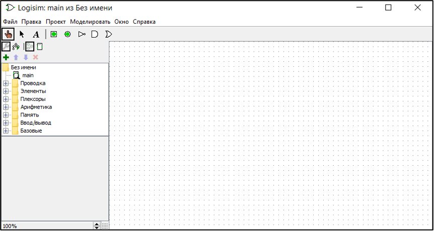
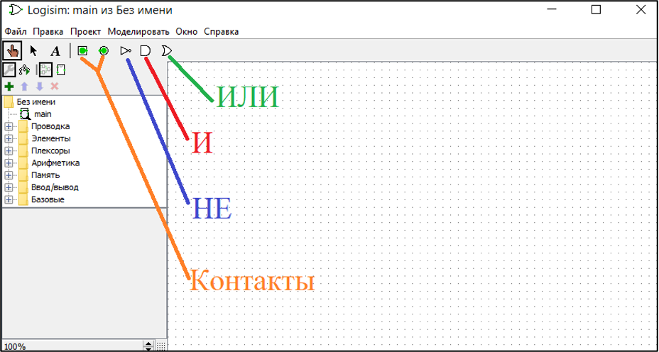
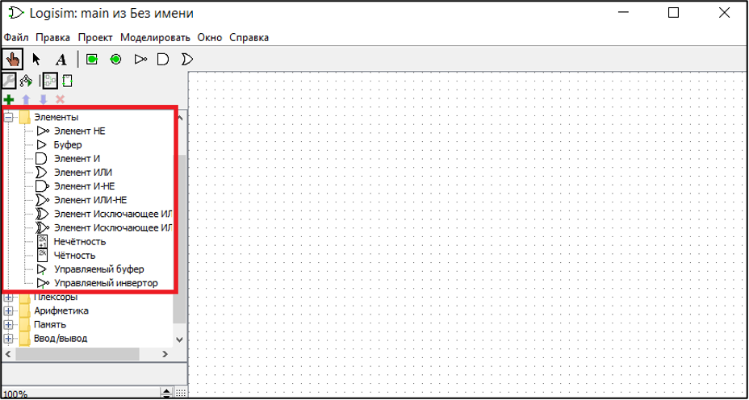
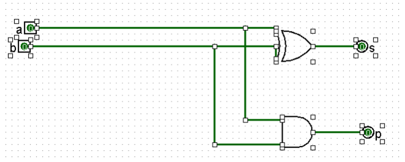
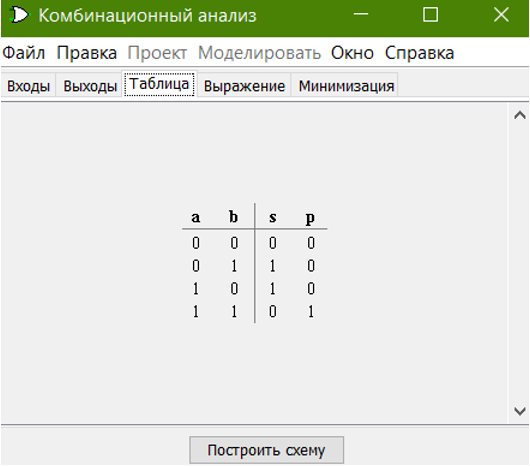
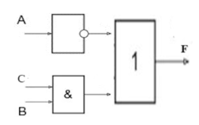

Тема лабораторной работы: «Создание логической схемы логических выражений и их проверка в программе «Конструктор логических схем».
Цель: обучение работе в конструкторе логических схем Logisim .
Оборудование: программа Logisim , интерактивная доска для демонстрации компьютера учителя.
Ход занятия:
Актуализация знаний
Изложение нового материала
Всем известно, что компоненты компьютера содержат электронные схемы. Процесс, например, является арифметико-логическим устройством компьютера. Арифметическая часть выполняет вычисления, за которые отвечает такой компонент электронной схемы, как сумматор. Сумматор – это устройство, предназначенное для сложения двоичных чисел. Сумматор состоит из полусумматоров, более мелких компонентов.
На сегодняшнем занятии мы научимся стоить логическую схему полусумматора с помощью программы Logisim , которая является конструктором логических схем.
Полусумматором является комбинационная логическая схема, в которой имеется два входа и два выхода. Возможности полусумматора сводятся к получению (обычно бинарной) суммы S , получающейся из поступающих с двух входов A и B , и разряда переноса P . Построим таблицу истинности полусумматора:
Таблица 1 – Таблица истинности полусумматора
|
Входы |
Выходы |
||
|
A |
B |
S |
P |
|
0 |
0 |
0 |
0 |
|
0 |
1 |
1 |
0 |
|
1 |
0 |
1 |
0 |
|
1 |
1 |
0 |
1 |
Рассмотрим основы работы в программе Logisim .
Запустим программу Logisim :

Рисунок 1 – Главная окно программы
Logisim
Чтобы посмотреть элементы можем воспользоваться основными инструментами, можно просто добавить их из главного меню:

Рисунок 2 – Основные элементы в быстром доступе
Если нужно большее количество элементов, то можно открыть папку элементы:

Рисунок 3 – Все элементы программы
Logisim
Задание. С помощью программы Logisim произведите моделирование полусумматора.
Решение
В результате получили следующую схему.

Рисунок 3. – Схема полусумматора
2) Проанализируем работу полученной схемы с помощью комбинационного анализа. Для этого выполним последовательность действий: Проект, Анализировать схему. В результате получили следующую таблицу результата комбинационного анализа:

Рисунок 4. – Таблица комбинационного анализа
3) Сравним таблицу, полученную в ходе проведения комбинационного анализа, спроектированной схемы, с имеющейся таблицей истинности полусумматора.

Сравнивая результата проектирования полусумматора (Рисунок 4) с результатами, приведенными в таблице 1 получаем, что при одинаковых наборах входных данных в разработанном полусумматоре были получены те же результаты суммы (
S
) и переноса (
P
), что и в таблице 1.
Вопросы и задания для самоконтроля